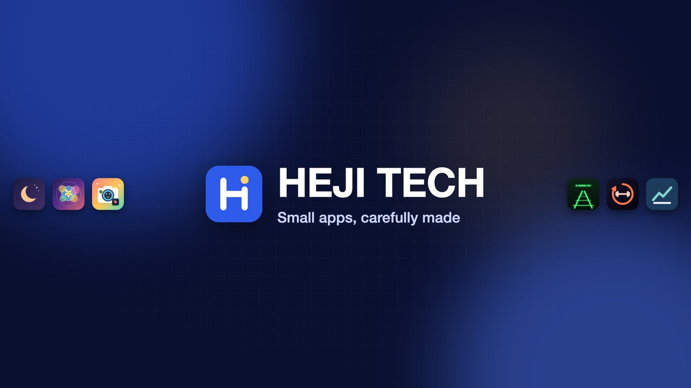
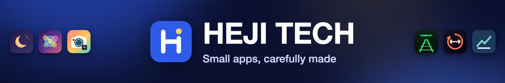
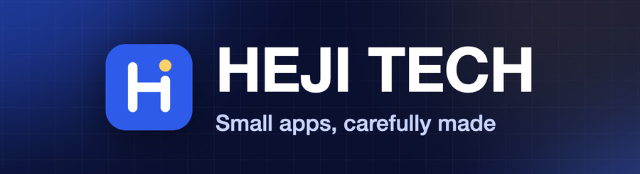

How-to · 2026-11-01
Setting up the HEJI TECH YouTube channel
Everything on the Profile tab is ready to paste or upload: a banner, a picture (the HEJI logo in place of the orange letter YouTube made up) and a watermark, all drawn from the HEJI logo on the apps site, plus the description, links, contact email and keywords. The Home tab plan comes after that: a trailer, a featured video and one playlist per app. It takes about 20 minutes.
Checked
- Image sizes and file sizes meet the limits shown on your Studio screenshots (measured with ImageMagick
identify). - The crops: the banner was cut to YouTube's desktop strip and phone safe area, and the picture to a circle (§1). Name and tagline fit inside the safe area.
- Text lengths: the description is under YouTube's 1,000-character limit (counter on each field).
- Links and email come from the repo: the apps site, the two App Store listings and the Worker sites named in
pages/.vitepress/theme/apps.ts, and theinfo@hejitech.comaddress the apps already list.
Not checked
- How it looks on YouTube itself. The crop previews follow YouTube's published safe area. Studio shows its own preview when you upload: check it there.
- Which promo videos are uploaded. The Home tab steps assume the cuts from the promo reports are on the channel.
- Whether
@hejitechis free as a handle (optional, §2).
Banner, picture and watermark: download and upload
All three use the HEJI logo from the apps site (pages/public/heji.svg: blue #2f5bea, white H, yellow dot) and its dark-blue glow background, so the channel looks like the site it links to. The banner also shows the icons of the six apps with promo videos.
Banner




In Studio, Upload opens a crop box that already frames the safe area. Leave it as it is and click Done.
Picture


The picture fills the whole square with blue, so YouTube's circle crop cuts nothing off. It replaces the orange "H" YouTube generates for new channels, which matches nothing else HEJI makes.
Watermark timing: when Studio asks, pick Entire video. The promos are 15 to 30 seconds, so "End of video" would only show it for a moment. On desktop, viewers can click the watermark to subscribe.
Profile tab: what to type in each field
In the order the Profile tab shows them. Each value has a Copy button that copies it exactly.
Name and handle: keep them
| Name | HEJI TECH: keep. It matches the handle, and YouTube only lets you change the name twice in 14 days. |
|---|---|
| Handle | @HEJI-TECH: keep. Handles aren't case-sensitive, so people can type @heji-tech. Optional: if @hejitech is free (type it in the field and Studio says whether it is available) it's shorter and matches the hejitech email and web addresses. YouTube keeps the old handle for you for 14 days, but links in video descriptions that use the old handle would break after that. |
| Pronouns | Leave empty: this is a company channel. |
Description
HEJI TECH makes small apps, carefully made. Each one does one job well, keeps working when the network doesn't, and lets the AI assistant you already use help out, with your permission, through MCP. Here you'll find short launch videos and how-tos for our apps: • Wee Hours: a newborn log built for 3am. Log a feed from your watch, and both parents know. • TinyTouch: calm play for your watch, safe in little hands. • ToddlerCam: a camera for little hands, and a remote on your watch. • Headway: your next Caltrain, at a glance, on Even G2 glasses. • FitLoop: your AI agent coaches, FitLoop keeps you on the plan. • Trading Plan Board: agents debate the trade, you approve it, your machine places it. Every app, with links to download or open it: https://tianhaoz95.github.io/hejitech-apps/ Business inquiries: info@hejitech.com
The first sentence or two are what YouTube shows in search results and in the channel header. Add language isn't needed: the videos are in English.
Links
Click Add link once per row. The first link is the one the channel header shows ("…and 5 more links"), so the apps site goes first.
HEJI Apps: all our apps
https://tianhaoz95.github.io/hejitech-apps/
TinyTouch on the App Store
https://apps.apple.com/us/app/tinytouch-toddler-lock-play/id6809942800
ToddlerCam on the App Store
https://apps.apple.com/us/app/toddlercam-dual-baby-camera/id6810526172
Wee Hours
https://weehours.hejitech.workers.dev
Headway
https://headway.hejitech.workers.dev
Trading Plan Board
https://tradeboard.hejitech.workers.dev
When Wee Hours, Headway or FitLoop reach the App Store, swap their link for the App Store listing (that's where a viewer can install it). YouTube allows up to 14 links.
Contact info
info@hejitech.com
This is the address the apps' own pages already list, so it's public already. Don't use a personal address here: viewers can see it on the About page.
Then click Publish
The Profile tab saves nothing until you click Publish (top right). The new picture and banner can take a few minutes to show everywhere.
Home tab: trailer, featured video and sections
The Home tab decides what a visitor sees first. It can only show videos and playlists that are already on the channel, so first upload the cuts and make the playlists.
Playlists first (Content → Playlists → New playlist)
One playlist per app, public, each holding that app's 30 s, 15 s and Short cuts. The upload kits in the promo reports already say to add each cut to its app's playlist.
| Playlist | Holds | Description (one line) |
|---|---|---|
| Wee Hours | wee hours launch 30 s, 15 s, Short | A newborn log built for 3am. |
| TinyTouch | tinytouch launch 30 s, 15 s, Short | Calm play for your watch, safe in little hands. |
| ToddlerCam | toddlercam launch 30 s, 15 s, Short | A camera for little hands, and a remote on your watch. |
| Headway | headway launch 30 s, 15 s, Short | Your next Caltrain, at a glance. |
| Trading Plan Board | tradeboard launch 30 s | Agents debate the trade. You approve it. Your machine places it. |
Customization → Home tab
| Channel trailer | TinyTouch 30 s ("TinyTouch: hand your watch to a toddler, without the surprise calls"). This is what people who haven't subscribed see. It opens with a joke, and TinyTouch is on the App Store, so a viewer can act on it right away. Swap it later for a 30 s "all the apps" reel if you make one. |
|---|---|
| Featured video | The newest upload, for people who have subscribed. Pick the latest promo, and change it with each launch. |
| Sections | Add them with Add section, in this order:
|
Settings outside the Customization page
Three more settings, in Studio's Settings (bottom of the left menu, as on your third screenshot).
Channel → Basic info
| Country | United States. |
|---|
HEJI TECH, HEJI Apps, app demo, iPhone apps, Apple Watch apps, Even G2, smart glasses apps, MCP, AI assistant, parenting apps, toddler apps, baby tracker, Caltrain
Channel → Advanced settings
| Audience | No, set this channel as not made for kids. TinyTouch and ToddlerCam are for children, but their videos are made for the parents who choose the apps. That's also what each promo's upload kit says. A channel marked "made for kids" loses comments, the mini-player and notifications on every video. |
|---|
Upload defaults
So every future upload starts with the settings the promo kits ask for, and you only fill in the title, the description's first lines and the thumbnail.
| Visibility | Private (switch to Public when the video is ready). |
|---|---|
| Category | Science & Technology |
| Video language | English. Caption certification: This content has never aired on television in the U.S. |
| License | Standard YouTube License |
— HEJI TECH: small apps, carefully made. Every app: https://tianhaoz95.github.io/hejitech-apps/
"Altered or synthetic content" is a per-video question, not a default. Answer it on each upload as that video's kit says (the promos with AI-generated people and synthetic voiceover: Yes).
Checklist
- Upload the bannerheji-youtube-banner.png; keep the crop Studio suggests
- Upload the pictureheji-youtube-picture.png; the orange H is gone
- Decide on the handlekeep @HEJI-TECH, or switch to @hejitech if it's free
- Paste the description
- Add the six linksapps site first
- Add info@hejitech.com
- Upload the watermarkdisplay time: Entire video
- Click Publish on the Profile tab
- Make one playlist per appafter the cuts are uploaded
- Home tab: trailer, featured video, sections; Publish
- Settings: keywords, not made for kids, upload defaults
- Look at the channel signed outon a phone and a computer: banner text not clipped, picture centred, links work
If something goes wrong
| What you see | Why, and what to do |
|---|---|
| The banner text is cut off on a phone | The crop box was moved. Upload again and leave the crop where Studio puts it. |
| The old orange H still shows | The new picture takes a few minutes to spread, and longer in comments. If it's still old after an hour, check that Profile was published. |
| "Handle not available" | Someone has @hejitech. Keep @HEJI-TECH; nothing else needs to change. |
| The TinyTouch cut isn't offered as the trailer | The trailer must be a video viewers can watch: set the cut to Public (or Unlisted) first. |
| Watermark missing on Shorts | That's expected: YouTube doesn't show watermarks on Shorts. |
| You want a different look | Write it in Your notes below. The image sources (script/assets/ in this report's folder) re-render in a minute. |
info@hejitech.com is checked regularly (it's the address the apps list for support, so YouTube business mail will land in the same inbox), and whether there's a hejitech.com website to link instead of the GitHub Pages apps site. If there is, make it Link 1.Your notes
Questions, corrections, decisions. Saved in this browser. Copy summary puts the whole report, your ticks and these notes on the clipboard for any agent, in this session or a new one.
Report: reports/2026-11-01-youtube-channel · serve with script/serve.sh